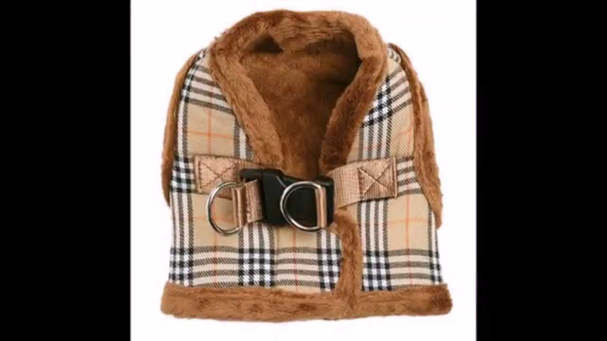

Žieminiai drabužiai
 phone +370 5267 1799 email Susisiekite su mumis x Salasõna Don't have an account? Register here Prisijungti shopping_cart Krepšelis (0) search Kategorijos Menu Atgal Produktai Darbo drabužiai
Darbo drabužiai
Darbinės kelnės Žieminiai drabužiai Žieminės striukės Darbiniai kombinezonai Darbo švarkai ir liemenės Palaidinės ir plisuotos palaidinės Marškinėliai ir polo marškinėliai Apatiniai drabužiai Darbo rūbai Hi-Vis Drabužiai nuo lietaus Moteriški darbo rūbai Vaikiški darbo rūbai Antkeliai Diržai ir aksesuarai Galvos apdangalai SoftShell Darbiniai šortai Darbo avalynėDarbo avalynė
Apsauginiai sandalai Apsauginiai bateliai Apsauginiai batai Kambarinė avalynė Poilsio ir darbo avalynė Guminiai batai Batų priežiūros priemonės Kojinės ir vidpadžiai Žieminė avalynė Moterų avalynė Darbinės pirštinėsDarbinės pirštinės
Pirštinės tiksliems darbams Dengtos tekstilinės pirštinės Tekstilinės pirštinės Pirštinės sunkiems darbams Guminės pirštinės Vienkartinės pirštinės Įpjovimui atsparios pirštinės Pirštinės ir priedai specialiems darbams Žieminės pirštinės Individualios apsaugos priemonėsIndividualios apsaugos priemonės
Apsauga nuo kritimo Galvos apsaugos Akių ir veido apsaugos Klausos apsaugos Kvėpavimo takų apsaugos SaugumasSaugumas
Darbo įrankiai Kišeniniai žibintuvėliai Kelių eismo saugumas Binokliai ir teleskopai Priešgaisrinė apsaugaPriešgaisrinė apsauga
Autonominiai jutikliai Gesintuvai Nedegus audeklas Tinklaraštis Parduotuvės Prisijungti shopping_cart Krepšelis (0) Kategorijos Menu Atgal Produktai Darbo drabužiaiDarbo drabužiai
Darbinės kelnės Žieminiai drabužiai Žieminės striukės Darbiniai kombinezonai Darbo švarkai ir liemenės Palaidinės ir plisuotos palaidinės Marškinėliai ir polo marškinėliai Apatiniai drabužiai Darbo rūbai Hi-Vis Drabužiai nuo lietaus Moteriški darbo rūbai Vaikiški darbo rūbai Antkeliai Diržai ir aksesuarai Galvos apdangalai SoftShell Darbiniai šortai Darbo avalynėDarbo avalynė
Apsauginiai sandalai Apsauginiai bateliai Apsauginiai batai Kambarinė avalynė Poilsio ir darbo avalynė Guminiai batai Batų priežiūros priemonės Kojinės ir vidpadžiai Žieminė avalynė Moterų avalynė Darbinės pirštinėsDarbinės pirštinės
Pirštinės tiksliems darbams Dengtos tekstilinės pirštinės Tekstilinės pirštinės Pirštinės sunkiems darbams Guminės pirštinės Vienkartinės pirštinės Įpjovimui atsparios pirštinės Pirštinės ir priedai specialiems darbams Žieminės pirštinės Individualios apsaugos priemonėsIndividualios apsaugos priemonės
Apsauga nuo kritimo Galvos apsaugos Akių ir veido apsaugos Klausos apsaugos Kvėpavimo takų apsaugos SaugumasSaugumas
Darbo įrankiai Kišeniniai žibintuvėliai Kelių eismo saugumas Binokliai ir teleskopai Priešgaisrinė apsaugaPriešgaisrinė apsauga
Autonominiai jutikliai Gesintuvai Nedegus audeklas Tinklaraštis Parduotuvės Parduotuves Pagrindinis Darbo drabužiai Žieminiai drabužiai Darbo drabužiai Darbinės kelnės Žieminiai drabužiai Žieminės striukės Darbiniai kombinezonai Darbo švarkai ir liemenės Palaidinės ir plisuotos palaidinės Marškinėliai ir polo marškinėliai Apatiniai drabužiai Darbo rūbai Hi-Vis Drabužiai nuo lietaus Moteriški darbo rūbai Vaikiški darbo rūbai Antkeliai Diržai ir aksesuarai Galvos apdangalai SoftShell Darbiniai šortai Blog TinklaraštisŽieminiai drabužiai
Rasta 20 prekės(-ių).
Rikiuoti pagal: Aktualumas Pavadinimas, A - Z Pavadinimas, Z - A Kaina, mažiausia - didžiausia Kaina, didžiausia - mažiausia Rodoma 1-20 iš 20 prekės(-ių)Aktyvūs filtrai
04 16 58 95 Greita peržiūra 1100SNICKERS WORKWEAR AllroundWork 37.5® izoliuota žieminė striukė
Kaina 154,00 € (127,27 €) 04 Greita peržiūra 9007SNICKERS WORKWEAR RuffWork žieminė kepurė
Kaina 45,00 € (37,19 €) 04 Greita peržiūra 9060SNICKERS WORKWEAR Windstopper® žieminė kepurė
Kaina 45,00 € (37,19 €) 04 66 Greita peržiūra 9093SNICKERS WORKWEAR Windstopper® žieminė kepurė su šviesą atspindinčiais...
Kaina 55,00 € (45,45 €) 04 Greita peržiūra 130OCEAN ABEKO Medusa žieminis kombinezonas
Kaina 189,00 € (156,20 €) 04 Greita peržiūra W9602WOOLPOWER 200 merino šalikas/apykaklė
Kaina 26,00 € (21,49 €) 04 Greita peržiūra 4512SNICKERS WORKWEAR AllroundWork 37.5® pašiltinta liemenė
Kaina 79,00 € (65,29 €) 04 95 Greita peržiūra 6619SNICKERS WORKWEAR AllroundWork 37.5® pašiltintos kelnės
Kaina 129,00 € (106,61 €) 66 55 Greita peržiūra 6639SNICKERS WORKWEAR AllroundWork Hi-Vis 37.5® pašiltintos kelnės+
Kaina 137,00 € (113,22 €) 66 Greita peržiūra 9029SNICKERS WORKWEAR RuffWork Hi-Vis šilta kepurė
Kaina 46,00 € (38,02 €) 04 Greita peržiūra 9030SNICKERS WORKWEAR FlexiWork elastinga fliso kepurė su užrašu
Kaina 16,00 € (13,22 €) 04 Greita peržiūra 9054SNICKERS WORKWEAR FlexiWork besiūlis daugiafunkcinis galvos apdangalas
Kaina 19,00 € (15,70 €) 66 55 Greita peržiūra 1130SNICKERS WORKWEAR AllroundWork 37.5 Hi-Vis žieminė striukė
Kaina 168,00 € (138,84 €) 04 58 95 Greita peržiūra 1102SNICKERS WORKWEAR 37.5® vandeniui atspari žieminė striukė su kapišonu
Kaina 199,00 € (164,46 €) 04 95 Greita peržiūra 1800SNICKERS WORKWEAR 37.5® vandeniui atspari parka
Kaina 227,00 € (187,60 €) 66 Greita peržiūra 513181/771OCEAN ABEKO Nystad Hi-Vis žieminė striukė
Kaina 155,00 € (128,10 €) 04 16 95 51 Greita peržiūra 9014SNICKERS WORKWEAR AllroundWork medvilninė kepurė
Kaina 15,00 € (12,40 €) 18 Greita peržiūra W7244WOOLPOWER 400 merino vilnos liemenė su užtrauktuku
Kaina 104,00 € (85,95 €) 66 55 Greita peržiūra 1830SNICKERS WORKWEAR 37.5® vandeniui Hi-Vis atspari parka
Kaina 269,00 € (222,31 €) 66 Greita peržiūra 1137SNICKERS WORKWEAR AllroundWork 37.5 su izoliacija Hi-Vis žieminė striukė...
Kaina 171,00 € (141,32 €) Rodoma 1-20 iš 20 prekės(-ių) Atgal į viršų Gaukite mūsų naujienas ir specialius išpardavimus
Apie įmonę
Apie įmonę Apie įmonę Parduotuvės Tamrex teistes riikides Vali riik Soome Läti LeeduInformacija
Informacija Naudojimo sąlygos Apsaugos sąlygos Transport Tamrex UAB
Savanorių pr. 191, 02300 Vilnius
Įmonės kodas 304112149
PVM kodas LT100009788717
+370 5267 1799
tamrex@tamrex.lt
© 2020 - Tamrex UAB
× GERAI ×